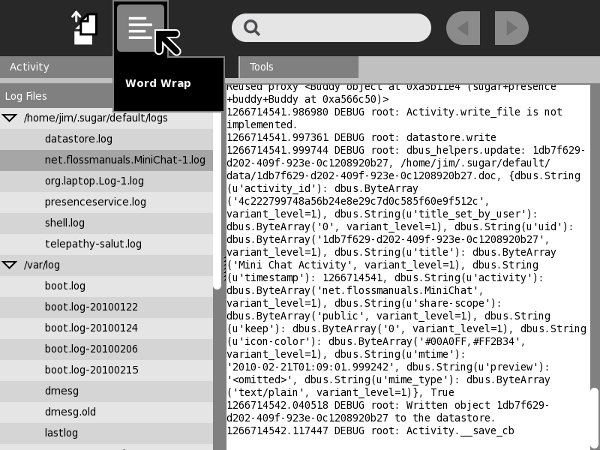
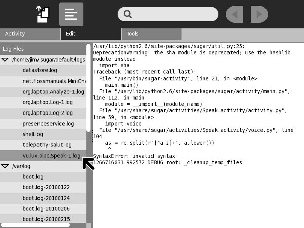
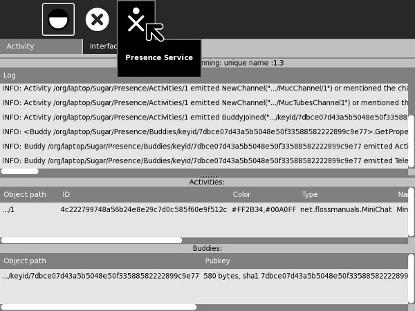

Debugging Sugar Activities
Introduction
No matter how careful you are it is reasonably likely that your Activity will not work perfectly the first time you try it out. Debugging a Sugar Activity is a bit different than debugging a standalone program. When you test a standalone program you just run the program itself. If there are syntax errors in the code you'll see the error messages on the console right away, and if you're running under the Eric IDE the offending line of code will be selected in the editor so you can correct it and keep going.
With Sugar it's a bit different. It's the Sugar environment, not Eric, that runs your program. If there are syntax errors in your code you won't see them right away. Instead, the blinking Activity icon you see when your Activity starts up will just keep on blinking for several minutes and then will just go away, and your Activity won't start up. The only way you'll see the error that caused the problem will be to use the Log Activity. If your program has no syntax errors but does have logic errors you won't be able to step through your code with a debugger to find them. Instead, you'll need to use some kind of logging to trace through what's happening in your code, and again use the Log Activity to view the trace messages. Now would be a good time to repeat some advice I gave before:
Make A Standalone Version Of Your Program First
Whatever your Activity does, it's a good bet that 80% of it could be done by a standalone program which would be much less tedious to debug. If you can think of a way to make your Activity runnable as either an Activity or a standalone Python program then by all means do it.
Use PyLint, PyChecker, or PyFlakes
One of the advantages of a compiled language like C over an interpreted language like Python is that the compiler does a complete syntax check of the code before converting it to machine language. If there are syntax errors the compiler gives you informative error messages and stops the compile. There is a utility call lint which C programmers can use to do even more thorough checks than the compiler would do and find questionable things going on in the code.
Python does not have a compiler but it does have several lint-like utilities you can run on your code before you test it. These utilities are pyflakes, pychecker, and pylint. Any Linux distribution should have all three available.
PyFlakes
Here is an example of using PyFlakes:
pyflakes minichat.py minichat.py:25: 'COLOR_BUTTON_GREY' imported but unused minichat.py:28: 'XoColor' imported but unused minichat.py:29: 'Palette' imported but unused minichat.py:29: 'CanvasInvoker' imported but unused
PyFlakes seems to do the least checking of the three, but it does find errors like these above that a human eye would miss.
PyChecker
Here is PyChecker in action:
pychecker ReadEtextsActivity.py Processing ReadEtextsActivity... /usr/lib/python2.5/site-packages/dbus/_dbus.py:251: DeprecationWarning: The dbus_bindings module is not public API and will go away soon. Most uses of dbus_bindings are applications catching the exception dbus.dbus_bindings.DBusException. You should use dbus.DBusException instead (this is compatible with all dbus-python versions since 0.40.2). If you need additional public API, please contact the maintainers via <dbus@lists.freedesktop.org>. import dbus.dbus_bindings as m Warnings... /usr/lib/python2.5/site-packages/sugar/activity/activity.py:847: Parameter (ps) not used /usr/lib/python2.5/site-packages/sugar/activity/activity.py:992: Parameter (event) not used /usr/lib/python2.5/site-packages/sugar/activity/activity.py:992: Parameter (widget) not used /usr/lib/python2.5/site-packages/sugar/activity/activity.py:996: Parameter (widget) not used /usr/lib/python2.5/site-packages/sugar/graphics/window.py:157: No class attribute (_alert) found /usr/lib/python2.5/site-packages/sugar/graphics/window.py:164: Parameter (window) not used /usr/lib/python2.5/site-packages/sugar/graphics/window.py:188: Parameter (widget) not used /usr/lib/python2.5/site-packages/sugar/graphics/window.py:200: Parameter (event) not used /usr/lib/python2.5/site-packages/sugar/graphics/window.py:200: Parameter (widget) not used ReadEtextsActivity.py:62: Parameter (widget) not used 4 errors suppressed, use -#/--limit to increase the number of errors displayed
PyChecker not only checks your code, it checks the code you import, including Sugar code.
PyLint
Here is PyLint, the most thorough of the three:
pylint ReadEtextsActivity.py
No config file found, using default configuration
************* Module ReadEtextsActivity
C:177: Line too long (96/80)
C: 1: Missing docstring
C: 27: Operator not preceded by a space
page=0
^
C: 27: Invalid name "page" (should match (([A-Z_][A-Z0-9_]*)|(__.*__))$)
C: 30:ReadEtextsActivity: Missing docstring
C:174:ReadEtextsActivity.read_file: Invalid name "zf" (should match [a-z_][a-z0-9_]{2,30}$)
W: 30:ReadEtextsActivity: Method 'write_file' is abstract in class 'Activity' but is not overridden
R: 30:ReadEtextsActivity: Too many ancestors (12/7)
W: 33:ReadEtextsActivity.__init__: Using the global statement
R: 62:ReadEtextsActivity.keypress_cb: Too many return statements (7/6)
C: 88:ReadEtextsActivity.page_previous: Missing docstring
W: 89:ReadEtextsActivity.page_previous: Using the global statement
C: 90:ReadEtextsActivity.page_previous: Operator not preceded by a space
page=page-1
^
C: 91:ReadEtextsActivity.page_previous: Operator not preceded by a space
if page < 0: page=0
^
C: 91:ReadEtextsActivity.page_previous: More than one statement on a single line
C: 96:ReadEtextsActivity.page_next: Missing docstring
W: 97:ReadEtextsActivity.page_next: Using the global statement
C: 98:ReadEtextsActivity.page_next: Operator not preceded by a space
page=page+1
^
C: 99:ReadEtextsActivity.page_next: More than one statement on a single line
C:104:ReadEtextsActivity.font_decrease: Missing docstring
C:112:ReadEtextsActivity.font_increase: Missing docstring
C:118:ReadEtextsActivity.scroll_down: Missing docstring
C:130:ReadEtextsActivity.scroll_up: Missing docstring
C:142:ReadEtextsActivity.show_page: Missing docstring
W:143:ReadEtextsActivity.show_page: Using global for 'PAGE_SIZE' but no assigment is done
W:143:ReadEtextsActivity.show_page: Using global for 'current_word' but no assigment is done
W:157:ReadEtextsActivity.save_extracted_file: Redefining name 'zipfile' from outer scope (line 21)
C:163:ReadEtextsActivity.save_extracted_file: Invalid name "f" (should match [a-z_][a-z0-9_]{2,30}$)
W:171:ReadEtextsActivity.read_file: Using global for 'PAGE_SIZE' but no assigment is done
C:177:ReadEtextsActivity.read_file: Invalid name "currentFileName" (should match [a-z_][a-z0-9_]{2,30}$)
C:179:ReadEtextsActivity.read_file: Invalid name "currentFileName" (should match [a-z_][a-z0-9_]{2,30}$)
C:197:ReadEtextsActivity.make_new_filename: Missing docstring
R:197:ReadEtextsActivity.make_new_filename: Method could be a function
R: 30:ReadEtextsActivity: Too many public methods (350/20)
W:174:ReadEtextsActivity.read_file: Attribute 'zf' defined outside __init__
W:181:ReadEtextsActivity.read_file: Attribute 'etext_file' defined outside __init__
W:175:ReadEtextsActivity.read_file: Attribute 'book_files' defined outside __init__
W:182:ReadEtextsActivity.read_file: Attribute 'page_index' defined outside __init__
... A bunch of tables appear here ...
Global evaluation
-----------------
Your code has been rated at 7.52/10 (previous run: 7.52/10)
PyLint is the toughest on your code and your ego. It not only tells you about syntax errors, it tells you everything someone might find fault with in your code. This includes style issues that won't affect how your code runs but will affect how readable it is to other programmers.
The Log Activity
When you start testing your Activities the Log Activity will be like your second home. It displays a list of log files in the left pane and when you select one it will display the contents of the file in the right pane. Every time you run your Activity a new log file is created for it, so you can compare the log you got this time with what you got on previous runs. The Edit toolbar is especially useful. It contains a button to show the log file with lines wrapped (which is not turned on by default but probably should be). It has another button to copy selections from the log to the clipboard, which will be handy if you want to show log messages to other developers.
The Tools toolbar has a button to delete log files. I've never found a reason to use it. Log files go away on their own when you shut down sugar-emulator.

Here is what the Log Activity looks like showing a syntax error in your code:

Logging
Without a doubt the oldest debugging technique there is would be the simple print statement. If you have a running program that misbehaves because of logic errors and you can't step through the code in a debugger to figure out what's happening you might print statements in your code. For instance, if you aren't sure that a method is ever getting executed you might put a statement like this as the first line of the method:
def my_method():
print 'my_method() begins'
You can include data in your print statements too. Suppose you need to know how many times a loop is run. You could do this:
while linecount < PAGE_SIZE:
line = self.etext_file.readline()
label_text = label_text + unicode(line, 'iso-8859-1')
linecount = linecount + 1
print 'linecount=', linecount
The output of these print statements can be seen in the Log Activity. When you're finished debugging your program you would remove these statements.
An old programming book I read once made the case for leaving the statements in the finished program. The authors felt that using these statements for debugging and them removing them is a bit like wearing a parachute when the plane is on the ground and taking it off when it's airborne. If the program is out in the world and has problems you might well wish you had those statements in the code so you could help the user and yourself figure out what's going on. On the other hand, print statements aren't free. They do take time to run and they fill up the log files with junk. What we need are print statements that you can turn on an off.
The way you can do this is with Python Standard Logging. In the form used by most Activities it looks like this:
self._logger = logging.getLogger('read-etexts-activity')
These statements would go in the __init__() method of your Activity. Every time you want to do a print() statement you would do this instead:
def _shared_cb(self, activity):
self._logger.debug('My activity was shared')
self.initiating = True
self._sharing_setup()
self._logger.debug('This is my activity: making a tube...')
id = self.tubes_chan[telepathy.CHANNEL_TYPE_TUBES].OfferDBusTube(
SERVICE, {})
def _sharing_setup(self):
if self._shared_activity is None:
self._logger.error('Failed to share or join activity')
return
Notice that there are two kinds of logging going on here: debug and error. These are error levels. Every statement has one, and they control which log statements are run and which are ignored. There are several levels of error logging, from lowest severity to highest:
self._logger.debug("debug message")
self._logger.info("info message")
self._logger.warn("warn message")
self._logger.error("error message")
self._logger.critical("critical message")
When you set the error level in your program to one of these values you get messages with that level and higher. You can set the level in your program code like this:
self._logger.setLevel(logging.DEBUG)
You can also set the logging level outside your program code using an environment variable. For instance, in Sugar .82 and lower you can start sugar-emulator like this:
SUGAR_LOGGER_LEVEL=debug sugar-emulator
The way you accomplish the same thing in Sugar .84 and greater is to edit the file ~/.sugar/debug and uncomment the line that sets the SUGAR_LOGGER_LEVEL.
The Analyze Activity
Another Activity you may find yourself using at some point is Analyze. This is more likely to be used to debug Sugar itself than to debug your Activity. If, for instance, your collaboration test environment doesn't seem to be working this Activity might help you or someone else figure out why.
I don't have a lot to say about this Activity here, but you should be aware that it exists.

Author : SugarDebugging
© James Simmons 2010
License : General Public License
Produced in FLOSS Manuals (http://www.flossmanuals.net)